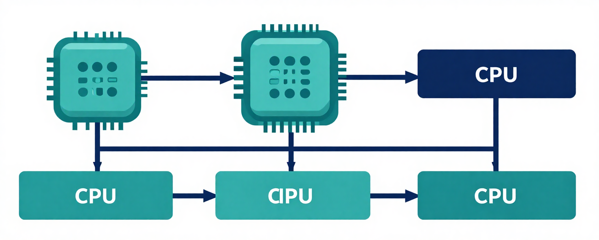

Arquitecturas de cómputo

La arquitectura de una computadora define cómo se organizan y coordinan sus componentes para ejecutar instrucciones. De ella dependen la capacidad de procesamiento, la velocidad y la eficiencia del sistema.
En esta unidad se estudian los modelos clásicos, las arquitecturas segmentadas y los sistemas de multiprocesamiento, además de los componentes fundamentales que participan en el procesamiento.
Entender la arquitectura es entender la computadora: cómo piensa, cómo recuerda y cómo se comunica con el mundo exterior.